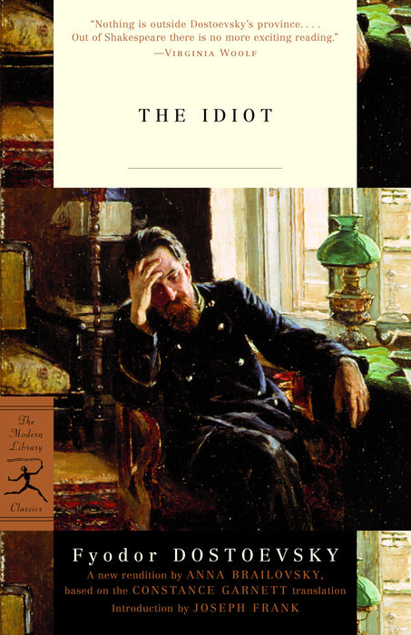

იდიოტი
ინფორმაცია წიგნზე
ავტორი: ფიოდორ დოსტოევსკი
ჟანრი: კრიმინალური, ფსიქოლოგიური, ფილოსოფიური
გამოშვების თარიღი: 1869 წელი
აღწერა:
შვეიცარიის სანიტარიუმიდან რუსეთში დაბრუნებული ქრისტეს მსგავსი ეპილეფსიური პრინცი მიშკინი აღმოჩნდება სიყვარულის ჭექა-ქუხილში, მოწყვეტილი ორ ქალს შორის - ყბადაღებულ ქალს ნასტასიასა და წმინდა აგლაიას - ორივე ჩართულია, თავის მხრივ, კორუმპირებულთან. ფულის მშიერი განია. ბოლოს და ბოლოს, მიშკინის პატიოსნება, სიკეთე და კეთილსინდისიერება უთანასწოროა მის გარშემო მყოფთა მორალურ სიცარიელესთან. გარნეტის თარგმანის გადასინჯვისას ანა ბრაილოვსკიმ შეასწორა გარნეტის მიერ რომანის მკვეთრი ანგლიციზაციის შედეგად წარმოქმნილი უზუსტობები და რაც შეიძლება მეტი აღადგინა ორიგინალური მოთხრობის სინტაქსური სტრუქტურა.
ავტორი: ფიოდორ მიკაილოვიჩ დოსტოევსკის ცხოვრება ისეთივე ბნელი და
დრამატული იყო, როგორც მის მიერ დაწერილი დიდი რომანები. იგი დაიბადა
მოსკოვში 1821 წელს. მოკლე პირველმა რომანმა,"საწყალი ადამიანები"
(1846), მას მყისიერი წარმატება მოუტანა, მაგრამ მისი სამწერლო კარიერა
შეწყდა 1849 წელს ცარ ნიკოლოზ I-ის წინააღმდეგ სავარაუდო დივერსიის გამო
დაპატიმრების გამო. მისი ციხის გამოცდილება და ღრმად რელიგიურ
ფილოსოფიაზე გადასვლამ საფუძველი ჩაუყარა მის დიდ რომანებს. მაგრამ ეს
იყო მისი შემთხვევითი ქორწინება ანა სნიტკინასთან, მისი იძულებითი
აზარტული თამაშებით გამოწვეული სრული სიღარიბის პერიოდის შემდეგ, რამაც
დოსტოევსკის მისცა ემოციური სტაბილურობა, რათა დაესრულებინა "დანაშაული
და სასჯელი" (1866), "იდიოტი" (1868-1869), "ეშმაკნი" (1871-1872) და
ძმები კარამაზოვები (1879-1880). როდესაც დოსტოევსკი გარდაიცვალა 1881
წელს, მან დატოვა შედევრების მემკვიდრეობა, რომელმაც გავლენა მოახდინა
დასავლური სამყაროს დიდ მოაზროვნეებსა და მწერლებზე და უკვდავყო იგი,
როგორც გიგანტი მსოფლიო ლიტერატურის მწერლებს შორის.
ავტორის ხელმოწერა: